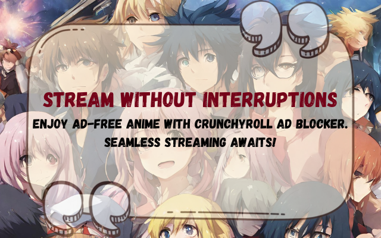

Imagine diving into the thrilling worlds of your favorite anime characters on Crunchyroll, uninterrupted by pesky ads. Moreover, our Crunchyroll Ad Blocker extension is the ultimate solution for anime aficionados craving a smooth, ad-free streaming experience. Bid farewell to those annoying interruptions and say hello to a cleaner, faster, and more immersive anime journey. Besides, with a quick and easy setup, our extension transforms your viewing sessions, allowing you to enjoy the latest episodes and beloved classics without distractions. Further, join thousands of satisfied users who have already elevated their Crunchyroll experience—install the Crunchyroll Adblock extension today and enjoy the adventure!
